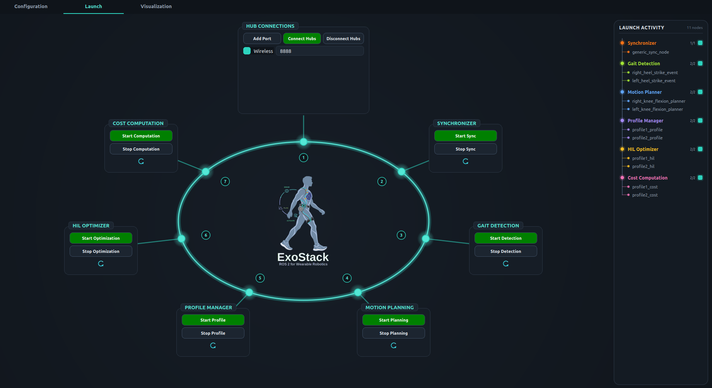
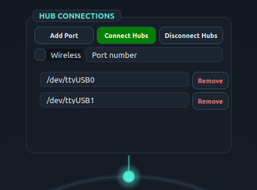
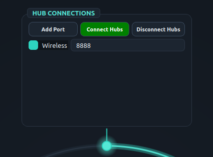

ExoStack / Get started
Running the stack
The stack runs as seven stages. Start them in the order below, from the PASE Launch tab or from terminals; the two are equivalent.
| # | Stage | PASE (Launch tab) | Terminal command | Check that it works |
|---|---|---|---|---|
| 1 | Hubs (micro-ROS agent) | HUB CONNECTIONS → Connect Hubs | Wi-Fi: ros2 run micro_ros_agent micro_ros_agent udp4 --port 8888USB: … serial --dev /dev/ttyUSB0 -b 115200 | power the boards; ros2 topic list shows /hub_right |
| 2 | Synchronizer | SYNCHRONIZER → Start Sync | ros2 run exo_stack sync | ros2 topic hz /synced_sensors |
| 3 | Gait detection | GAIT DETECTION → Start Detection | ros2 launch exo_stack gait_event_detector_launch.py | ros2 topic echo /heel_strike_right while walking |
| 4 | Motion planning | MOTION PLANNING → Start Planning | ros2 launch exo_stack mplanner_launch.py | output topics carry default_output |
| 5 | Profiles | PROFILE MANAGER → Start Profile | ros2 launch exo_stack profile_launch.py | ros2 topic echo /profile/right_hip_extension |
| 6 | Cost (HIL) | COST COMPUTATION → Start Computation | ros2 launch exo_stack cost_launch.py | cost logged after the considered cycles |
| 7 | HIL optimizer | HIL OPTIMIZER → Start Optimization | ros2 launch exo_stack hil_launch.py | candidate #1 logged |
START THE OPTIMIZER LASTThe HIL optimizer sends its first candidate as soon as it starts. Start it only after the profile, planner and cost stages are running, otherwise the first candidate is lost and the optimizer waits indefinitely for its cost. In Deployment mode, stop at stage 5.
- Each launch file starts one node per entry of its YAML file, named
<key>_event,<key>_planner,<key>_profile,<key>_cost,<key>_hil. - To run a single entry while debugging, pass its key:
ros2 run exo_stack gait_event_detector right_heel_strike(likewisemplanner,actuation_profile,cost,hilwith a planner or profile key). - Each stage box has Start, Stop and a restart icon; restart a stage after you edit and save its YAML file. A stage box lights up while its processes run; the activity tree lists every node expected from the YAML files and marks the ones that are alive.
- Stop in reverse order. Disconnect Hubs stops the agents.
- HIL results are written when the optimizer finishes, to
~/exo_stack_resources/hil_results/HIL_<optimizer>_<cost>_…_<time>.csv(one row per candidate: number, parameters, cost).
Manual override of a planner
terminal
$ ros2 topic pub --once /right_hip_extension/manual_mode std_msgs/msg/Int32 "{data: 1}" # enter manual mode
$ ros2 topic pub --once /right_hip_extension/manual_cmd std_msgs/msg/Float32 "{data: 30.0}" # output = default + 30
$ ros2 topic pub --once /right_hip_extension/manual_mode std_msgs/msg/Int32 "{data: 0}" # back to profiles
Screenshot S2.3-1. Launch tab with every stage started: each stage box is lit and the activity tree on the right lists the live nodes.
 (a) USB |  (b) Wi-Fi |
Screenshot S2.3-2. HUB CONNECTIONS box: (a) USB, one serial port per hub; (b) Wi-Fi, with the agent on UDP port 8888.